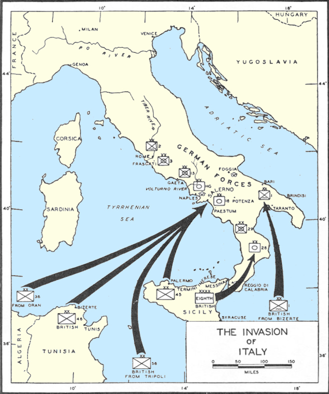

Batalla de Italia
La campaña aliada para conquistar Sicilia y la península italiana, que sacó a Italia de la guerra pero se convirtió en una larga y dura lucha de montaña.
Datos
| Fechas | 10 de julio de 1943 (Sicilia) – 2 de mayo de 1945 |
|---|---|
| Lugar | Sicilia y la península italiana |
| Resultado | Victoria aliada; rendición alemana en Italia |
| Bando aliado | Estados Unidos, Reino Unido, Canadá, con fuerzas polacas, francesas y brasileñas |
| Bando del Eje | Alemania e Italia (tras 1943, la República Social Italiana) |
| Comandantes | Dwight Eisenhower, Harold Alexander, Mark Clark (Aliados); Albert Kesselring (Alemania) |
| Consecuencia directa | Caída de Mussolini y armisticio italiano; Italia cambia de bando |
Bando aliado
Bando del Eje
(hasta el armisticio)
Introducción
Tras expulsar al Eje del Norte de África, los aliados dieron el salto a Europa por su "bajo vientre": Sicilia, en julio de 1943. La invasión precipitó la caída de Mussolini y el cambio de bando de Italia, pero Alemania ocupó rápidamente el país y transformó la península en un durísimo frente defensivo.
Razones
- Sacar a Italia de la guerra: el socio más débil del Eje era el objetivo lógico tras el Norte de África.
- Abrir un segundo frente: aliviar la presión sobre la URSS, que reclamaba una ofensiva en el oeste.
- Controlar el Mediterráneo: asegurar las rutas navales y disponer de bases aéreas para bombardear Europa central.
Cuerpo (desarrollo)
La Operación Husky conquistó Sicilia y desencadenó la caída de Mussolini a finales de julio de 1943. En septiembre, Italia firmó un armisticio, pero Alemania desarmó a su antiguo aliado y ocupó el país. Los desembarcos aliados en Salerno y, más tarde, en Anzio chocaron con una defensa alemana feroz.
Kesselring convirtió la geografía montañosa de Italia en una sucesión de líneas fortificadas (la Línea Gustav, la Línea Gótica). La batalla por Montecassino se prolongó durante meses. El avance fue lento y sangriento; Roma no cayó hasta junio de 1944, y el norte de Italia resistió casi hasta el final de la guerra.

Mapa de la invasión de Italia de 1943 (Wikimedia Commons): los desembarcos aliados y el avance inicial por la península. Leyenda original en inglés.
Conclusión
La campaña logró sacar a Italia de la guerra y fijar en la península a numerosas divisiones alemanas, pero fue mucho más lenta y costosa de lo previsto.
- Italia cambió de bando y parte de su ejército y su resistencia partisana combatieron junto a los aliados.
- Mussolini, rescatado por los alemanes, encabezó un estado títere en el norte hasta ser capturado y ejecutado en 1945.
- La dureza del terreno demostró los límites de las ofensivas aliadas en montaña.
Curiosidades
- Montecassino: la histórica abadía fue destruida por bombardeos aliados; las tropas polacas fueron las que finalmente tomaron sus ruinas.
- La Operación Mincemeat: los aliados engañaron al Eje con documentos falsos en un cadáver para ocultar que el objetivo era Sicilia.
- Ejército internacional: en Italia combatieron juntos estadounidenses, británicos, canadienses, polacos, franceses, indios, neozelandeses y brasileños.
Teorías
Debates e interpretaciones historiográficas, presentados como tales:
- ¿"Bajo vientre blando"? Churchill llamó así a Italia, pero el terreno resultó durísimo; se debate si la campaña mereció el enorme esfuerzo o si distrajo recursos de otros frentes.
- Anzio: se discute si los aliados desaprovecharon la sorpresa del desembarco al no avanzar con rapidez hacia el interior.